锦致装饰 Supplementaries
共 281 个条目 · supplementaries
版本: 1.21.1-3.8.5 · 来源: supplementaries-neoforge-1.21.1-3.8.5.jar
Many functional and useful Vanilla+ blocks
MC百科中文名: 锦致装饰
MC百科页面: https://www.mcmod.cn/class/3555.html（锦致装饰 (Supplementaries)）
官方介绍 （Modrinth · 联网获取）
📖About 📖
Supplementaries is a highly configurable Forge mod focused on adding valuable content which fills the gaps vanilla has. Its features are tailored to be functional, aesthetically viable, and complementary to preexisting content and provide many new ways to enhance your Vanilla+ experience.
The mod requires Moonlight Library
While supported, Fabric version might be missing some minor features as the mod is mainly for Forge
You are free to include this mod in your modpack
Translated in the following languages! Deutsch | Polski | Français | Русский | Italiano | English | Čeština | 한국어 | Українська | Português | Српски | Español | Қазақ | Bahasa Melayu | Pirate Speech | 简体中文 (中国) | 繁體中文 (香港) | 繁體中文 (台灣) | Türkçe
🖼️ Media 🖼️
Check out some reviews here
❓ F. A. Q. ❓
Q: How do I disable/tweak X feature? A: Refer to the Customization section in the Wiki or join our Discord
Q: Could you update/downgrade to X version? A: I plan to eventually port the mod to every new major Minecraft version so be patient. As for downgrades absolutely no, I'm not interested in supporting older obsolete versions. Maintaining this one version already takes up so much of my time and so much changed between those versions that I would have to pretty much re-learn how to mod.
Q: Could you add X feature/block? A: I would encourage you to join our Discord. We have a section dedicated to suggestions like that. If I'll feel like your idea fits well enough it will have a high chance to be eventually added.
Q: How do I use X block/item? A: Once again refer to the Wiki.
Q: How can I fix this issue/ crash? A: Please open a report in the Issues section always including a Crash Report.
Q: Fabric version is missing X A: Supplementaries is a mainly a Forge Mod and if some feature is missing that means that it didnt have a simple or easy implementation as Fabric was missing a counterpart of something provided by Forge API that such feature was heavily reliant on. For more info check this.

🏆 Credits 🏆
Many people have contributed assets and textures to the mod and such list is too big to be included here. However to view them directly in-game, insert a written Book named "credits" in a Notice Board. Also some sounds are from Zapsplat so credit to them
Modding is taking a lot of my time, so if you like what I do, and you would like to support me, you can do so here. If you do, you'll receive a custom Globe and or Statue just for you! This also applies if you purchase a server from Akliz using "supplementaries" code.
Need a server? Check out Akliz, they have top brand servers just for modded minecraft.
Use code "supplementaries" to get 20% off and also support me in the process!
资料来源：Supplementaries（自动匹配，仅供参考）
物品与方块
supplementaries:altimeter · 物品
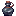
古式墨水supplementaries:antique_ink · 物品
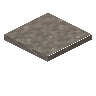
灰烬supplementaries:ash · 方块
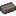
灰烬砖supplementaries:ash_brick · 物品
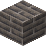
灰烬砖块supplementaries:ash_bricks · 方块
 灰烬砖台阶
灰烬砖台阶supplementaries:ash_bricks_slab · 方块
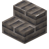
灰烬砖楼梯supplementaries:ash_bricks_stairs · 方块
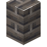
灰烬砖墙supplementaries:ash_bricks_wall · 方块
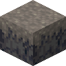
玄武岩supplementaries:ashen_basalt · 方块
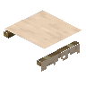
遮阳棚supplementaries:awning · 方块
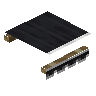
黑色遮阳棚supplementaries:awning_black · 方块
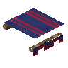
蓝色遮阳棚supplementaries:awning_blue · 方块
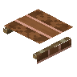
棕色遮阳棚supplementaries:awning_brown · 方块
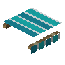
青色遮阳棚supplementaries:awning_cyan · 方块
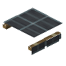
灰色遮阳棚supplementaries:awning_gray · 方块
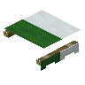
绿色遮阳棚supplementaries:awning_green · 方块
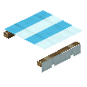
淡蓝色遮阳棚supplementaries:awning_light_blue · 方块
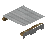
淡灰色遮阳棚supplementaries:awning_light_gray · 方块
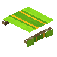
黄绿色遮阳棚supplementaries:awning_lime · 方块
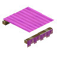
品红色遮阳棚supplementaries:awning_magenta · 方块
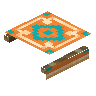
橙色遮阳棚supplementaries:awning_orange · 方块
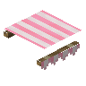
粉红色遮阳棚supplementaries:awning_pink · 方块
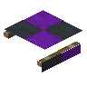
紫色遮阳棚supplementaries:awning_purple · 方块
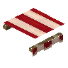
红色遮阳棚supplementaries:awning_red · 方块
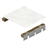
白色遮阳棚supplementaries:awning_white · 方块
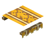
黄色遮阳棚supplementaries:awning_yellow · 方块
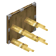
竹刺supplementaries:bamboo_spikes · 方块浸药竹刺
supplementaries:bamboo_spikes_tipped · 物品
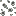
藤壶supplementaries:barnacles · 方块
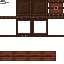
风箱supplementaries:bellows · 方块?黑板
supplementaries:blackboard · 方块
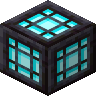
黑石灯supplementaries:blackstone_lamp · 方块
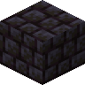
黑石瓦supplementaries:blackstone_tile · 方块
 黑石瓦台阶
黑石瓦台阶supplementaries:blackstone_tile_slab · 方块
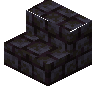
黑石瓦楼梯supplementaries:blackstone_tile_stairs · 方块
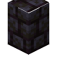
黑石瓦墙supplementaries:blackstone_tile_wall · 方块
 锻造模板
锻造模板supplementaries:blast_armor_trim_smithing_template · 物品
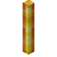
烈焰棒supplementaries:blaze_rod · 方块
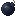
炸弹supplementaries:bomb · 物品靛蓝炸弹
supplementaries:bomb_blue · 物品靛蓝炸弹
supplementaries:bomb_blue_projectile · 物品炸弹
supplementaries:bomb_projectile · 物品
 尖刺炸弹
尖刺炸弹supplementaries:bomb_spiky · 物品尖刺炸弹
supplementaries:bomb_spiky_projectile · 物品
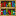
书堆supplementaries:book_pile · 方块书堆
supplementaries:book_pile_horizontal · 方块
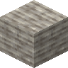
脆石supplementaries:brittlestone · 方块
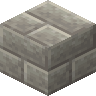
脆石砖supplementaries:brittlestone_bricks · 方块
 脆石砖台阶
脆石砖台阶supplementaries:brittlestone_bricks_slab · 方块
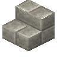
脆石砖楼梯supplementaries:brittlestone_bricks_stairs · 方块
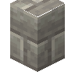
脆石砖墙supplementaries:brittlestone_bricks_wall · 方块肥皂泡
supplementaries:bubble_block · 方块泡泡环
supplementaries:bubble_blower · 物品?彩旗
supplementaries:bunting · 物品
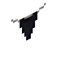
黑色彩旗supplementaries:bunting_black · 方块
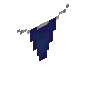
蓝色彩旗supplementaries:bunting_blue · 方块
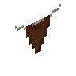
棕色彩旗supplementaries:bunting_brown · 方块
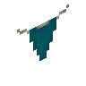
青色彩旗supplementaries:bunting_cyan · 方块
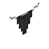
灰色彩旗supplementaries:bunting_gray · 方块
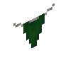
绿色彩旗supplementaries:bunting_green · 方块
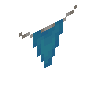
淡蓝色彩旗supplementaries:bunting_light_blue · 方块
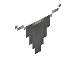
淡灰色彩旗supplementaries:bunting_light_gray · 方块
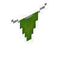
黄绿色彩旗supplementaries:bunting_lime · 方块
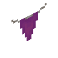
品红色彩旗supplementaries:bunting_magenta · 方块
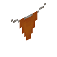
橙色彩旗supplementaries:bunting_orange · 方块
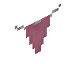
粉红色彩旗supplementaries:bunting_pink · 方块紫色彩旗
supplementaries:bunting_purple · 方块红色彩旗
supplementaries:bunting_red · 方块白色彩旗
supplementaries:bunting_white · 方块黄色彩旗
supplementaries:bunting_yellow · 方块笼子
supplementaries:cage · 方块?金灯台
supplementaries:candelabra · 方块
 蜡烛烛台
蜡烛烛台supplementaries:candle_holder · 方块黑色蜡烛烛台
supplementaries:candle_holder_black · 方块
 蓝色蜡烛烛台
蓝色蜡烛烛台supplementaries:candle_holder_blue · 方块
 棕色蜡烛烛台
棕色蜡烛烛台supplementaries:candle_holder_brown · 方块
 铜绿蜡烛烛台
铜绿蜡烛烛台supplementaries:candle_holder_cupric · 方块
 青色蜡烛烛台
青色蜡烛烛台supplementaries:candle_holder_cyan · 方块
 末影蜡烛烛台
末影蜡烛烛台supplementaries:candle_holder_ender · 方块
 灰色蜡烛烛台
灰色蜡烛烛台supplementaries:candle_holder_gray · 方块
 绿色蜡烛烛台
绿色蜡烛烛台supplementaries:candle_holder_green · 方块
 淡蓝色蜡烛烛台
淡蓝色蜡烛烛台supplementaries:candle_holder_light_blue · 方块
 淡灰色蜡烛烛台
淡灰色蜡烛烛台supplementaries:candle_holder_light_gray · 方块
 黄绿色蜡烛烛台
黄绿色蜡烛烛台supplementaries:candle_holder_lime · 方块
 品红色蜡烛烛台
品红色蜡烛烛台supplementaries:candle_holder_magenta · 方块
 橙色蜡烛烛台
橙色蜡烛烛台supplementaries:candle_holder_orange · 方块
 粉红色蜡烛烛台
粉红色蜡烛烛台supplementaries:candle_holder_pink · 方块
 紫色蜡烛烛台
紫色蜡烛烛台supplementaries:candle_holder_purple · 方块
 红色蜡烛烛台
红色蜡烛烛台supplementaries:candle_holder_red · 方块
 灵魂蜡烛烛台
灵魂蜡烛烛台supplementaries:candle_holder_soul · 方块
 夜视蜡烛烛台
夜视蜡烛烛台supplementaries:candle_holder_spectacle · 方块
 白色蜡烛烛台
白色蜡烛烛台supplementaries:candle_holder_white · 方块
 黄色蜡烛烛台
黄色蜡烛烛台supplementaries:candle_holder_yellow · 方块糖果
supplementaries:candy · 物品大炮
supplementaries:cannon · 方块?%s载炮船
supplementaries:cannon_boat · 物品supplementaries:cannon_boat_oak
supplementaries:cannon_boat_oak · 物品?%s载炮筏
supplementaries:cannon_raft · 物品竹载炮筏
supplementaries:cannon_raft_bamboo · 物品炮弹
supplementaries:cannonball · 方块制图羽毛笔
supplementaries:cartographers_quill · 物品棋盘格方块
supplementaries:checker_block · 方块
 棋盘格台阶
棋盘格台阶supplementaries:checker_slab · 方块时钟方块
supplementaries:clock_block · 方块齿轮方块
supplementaries:cog_block · 方块?彩花拉炮
supplementaries:confetti_popper · 物品曲柄
supplementaries:crank · 方块水晶显示屏
supplementaries:crystal_display · 方块粗灰泥
supplementaries:daub · 方块粗灰泥篱笆支架
supplementaries:daub_brace · 方块粗灰泥篱笆交叉支架
supplementaries:daub_cross_brace · 方块粗灰泥篱笆框架
supplementaries:daub_frame · 方块深板岩灯
supplementaries:deepslate_lamp · 方块发射器矿车
supplementaries:dispenser_minecart · 物品门垫
supplementaries:doormat · 方块
 旗帜图案
旗帜图案supplementaries:dragon_banner_pattern · 物品末地石灯
supplementaries:end_stone_lamp · 方块
 末影人的头
末影人的头supplementaries:enderman_head · 方块水龙头
supplementaries:faucet · 方块羽毛块
supplementaries:feather_block · 方块细木堆
supplementaries:fine_wood · 方块
 细木堆台阶
细木堆台阶supplementaries:fine_wood_slab · 方块细木堆楼梯
supplementaries:fine_wood_stairs · 方块篝火
supplementaries:fire_pit · 方块
 横旗
横旗supplementaries:flag · 方块
 黑色横旗
黑色横旗supplementaries:flag_black · 方块
 蓝色横旗
蓝色横旗supplementaries:flag_blue · 方块棕色横旗
supplementaries:flag_brown · 方块
 青色横旗
青色横旗supplementaries:flag_cyan · 方块
 灰色横旗
灰色横旗supplementaries:flag_gray · 方块
 绿色横旗
绿色横旗supplementaries:flag_green · 方块
 淡蓝色横旗
淡蓝色横旗supplementaries:flag_light_blue · 方块
 淡灰色横旗
淡灰色横旗supplementaries:flag_light_gray · 方块
 黄绿色横旗
黄绿色横旗supplementaries:flag_lime · 方块
 品红色横旗
品红色横旗supplementaries:flag_magenta · 方块
 橙色横旗
橙色横旗supplementaries:flag_orange · 方块
 粉红色横旗
粉红色横旗supplementaries:flag_pink · 方块
 紫色横旗
紫色横旗supplementaries:flag_purple · 方块
 红色横旗
红色横旗supplementaries:flag_red · 方块
 白色横旗
白色横旗supplementaries:flag_white · 方块
 黄色横旗
黄色横旗supplementaries:flag_yellow · 方块亚麻
supplementaries:flax · 方块亚麻捆
supplementaries:flax_block · 方块亚麻种子
supplementaries:flax_seeds · 物品燧石块
supplementaries:flint_block · 方块花箱
supplementaries:flower_box · 方块竹笛
supplementaries:flute · 物品饲料堆
supplementaries:fodder · 方块地球仪
supplementaries:globe · 方块
 墨绘地球仪
墨绘地球仪supplementaries:globe_sepia · 方块酒杯
supplementaries:goblet · 方块金栏杆
supplementaries:gold_bars · 方块金门
supplementaries:gold_door · 方块金栏杆门
supplementaries:gold_gate · 方块?金灯笼
supplementaries:gold_lantern · 方块金活板门
supplementaries:gold_trapdoor · 方块沙砾砖
supplementaries:gravel_bricks · 方块火药
supplementaries:gunpowder · 方块帽架
supplementaries:hat_stand · 物品沙漏
supplementaries:hourglass · 方块铁栏杆门
supplementaries:iron_gate · 方块物品架
supplementaries:item_shelf · 方块玻璃罐
supplementaries:jar · 方块罐中船
supplementaries:jar_boat · 方块?遮光玻璃罐
supplementaries:jar_tinted · 方块钥匙
supplementaries:key · 物品青金石砖
supplementaries:lapis_bricks · 方块
 青金石砖台阶
青金石砖台阶supplementaries:lapis_bricks_slab · 方块青金石砖楼梯
supplementaries:lapis_bricks_stairs · 方块青金石砖墙
supplementaries:lapis_bricks_wall · 方块?铅门
supplementaries:lead_door · 方块?铅灯笼
supplementaries:lead_lantern · 方块?铅活板门
supplementaries:lead_trapdoor · 方块锁方块
supplementaries:lock_block · 方块荧光液
supplementaries:lumisene · 方块荧光液瓶
supplementaries:lumisene_bottle · 物品荧光液桶
supplementaries:lumisene_bucket · 物品午餐篮
supplementaries:lunch_basket · 方块音乐唱片
supplementaries:music_disc_heave_ho · 物品下界合金门
supplementaries:netherite_door · 方块下界合金活板门
supplementaries:netherite_trapdoor · 方块布告栏
supplementaries:notice_board · 方块?不祥横旗
supplementaries:ominous_flag · 方块松饼
supplementaries:pancake · 方块松饼
supplementaries:pancake_disc · 物品展示台
supplementaries:pedestal · 方块种植盆
supplementaries:planter · 方块
 游掠者刷怪蛋
游掠者刷怪蛋supplementaries:plunderer_spawn_egg · 物品
 亚麻盆栽
亚麻盆栽supplementaries:potted_flax · 方块礼物盒
supplementaries:present · 方块黑色礼物盒
supplementaries:present_black · 方块蓝色礼物盒
supplementaries:present_blue · 方块棕色礼物盒
supplementaries:present_brown · 方块青色礼物盒
supplementaries:present_cyan · 方块灰色礼物盒
supplementaries:present_gray · 方块绿色礼物盒
supplementaries:present_green · 方块淡蓝色礼物盒
supplementaries:present_light_blue · 方块淡灰色礼物盒
supplementaries:present_light_gray · 方块黄绿色礼物盒
supplementaries:present_lime · 方块品红色礼物盒
supplementaries:present_magenta · 方块橙色礼物盒
supplementaries:present_orange · 方块粉红色礼物盒
supplementaries:present_pink · 方块紫色礼物盒
supplementaries:present_purple · 方块红色礼物盒
supplementaries:present_red · 方块白色礼物盒
supplementaries:present_white · 方块黄色礼物盒
supplementaries:present_yellow · 方块滑轮方块
supplementaries:pulley_block · 方块?箭袋
supplementaries:quiver · 物品耙过的沙砾
supplementaries:raked_gravel · 方块
红商人刷怪蛋supplementaries:red_merchant_spawn_egg · 物品红石照明器
supplementaries:redstone_illuminator · 方块继电器
supplementaries:relayer · 方块绳索
supplementaries:rope · 方块绳索箭矢
supplementaries:rope_arrow · 物品绳结
supplementaries:rope_knot · 方块麻布袋
supplementaries:sack · 方块保险箱
supplementaries:safe · 方块加固火把
supplementaries:sconce · 方块末影加固火把
supplementaries:sconce_ender · 方块?末影加固火把
supplementaries:sconce_ender_wall · 方块荧光加固火把
supplementaries:sconce_glow · 方块?荧光加固火把
supplementaries:sconce_glow_wall · 方块铜绿加固火把
supplementaries:sconce_green · 方块加固火把拉杆
supplementaries:sconce_lever · 方块下界黄铜加固火把
supplementaries:sconce_nether_brass · 方块?下界黄铜加固火把
supplementaries:sconce_nether_brass_wall · 方块灵魂加固火把
supplementaries:sconce_soul · 方块?灵魂加固火把
supplementaries:sconce_soul_wall · 方块
 加固火把
加固火把supplementaries:sconce_wall · 方块?头颅烛台
supplementaries:skull_candle · 方块切面地图
supplementaries:slice_map · 物品滑动方块
supplementaries:slidy_block · 方块弹弓
supplementaries:slingshot · 物品肥皂
supplementaries:soap · 物品肥皂块
supplementaries:soap_block · 方块?肥皂水
supplementaries:soap_water · 物品扬声器
supplementaries:speaker_block · 方块?速度计
supplementaries:speedometer · 物品
蜘蛛的头supplementaries:spider_head · 方块弹射台
supplementaries:spring_launcher · 方块弹射台臂
supplementaries:spring_launcher_arm · 方块弹射台
supplementaries:spring_launcher_head · 方块雕像
supplementaries:statue · 方块木棍
supplementaries:stick · 方块石灯
supplementaries:stone_lamp · 方块石瓦
supplementaries:stone_tile · 方块
 石瓦台阶
石瓦台阶supplementaries:stone_tile_slab · 方块石瓦楼梯
supplementaries:stone_tile_stairs · 方块石瓦墙
supplementaries:stone_tile_wall · 方块0
supplementaries:structure_temp · 方块糖块
supplementaries:sugar_cube · 方块可疑的沙砾砖
supplementaries:suspicious_gravel_bricks · 方块罐中小土豆
supplementaries:tater_in_a_jar · 方块木支架
supplementaries:timber_brace · 方块木交叉支架
supplementaries:timber_cross_brace · 方块木框架
supplementaries:timber_frame · 方块陷阱礼物盒
supplementaries:trapped_present · 方块黑色陷阱礼物盒
supplementaries:trapped_present_black · 方块蓝色陷阱礼物盒
supplementaries:trapped_present_blue · 方块棕色陷阱礼物盒
supplementaries:trapped_present_brown · 方块青色陷阱礼物盒
supplementaries:trapped_present_cyan · 方块灰色陷阱礼物盒
supplementaries:trapped_present_gray · 方块绿色陷阱礼物盒
supplementaries:trapped_present_green · 方块
 淡蓝色陷阱礼物盒
淡蓝色陷阱礼物盒supplementaries:trapped_present_light_blue · 方块淡灰色陷阱礼物盒
supplementaries:trapped_present_light_gray · 方块黄绿色陷阱礼物盒
supplementaries:trapped_present_lime · 方块品红色陷阱礼物盒
supplementaries:trapped_present_magenta · 方块橙色陷阱礼物盒
supplementaries:trapped_present_orange · 方块粉红色陷阱礼物盒
supplementaries:trapped_present_pink · 方块紫色陷阱礼物盒
supplementaries:trapped_present_purple · 方块红色陷阱礼物盒
supplementaries:trapped_present_red · 方块白色陷阱礼物盒
supplementaries:trapped_present_white · 方块黄色陷阱礼物盒
supplementaries:trapped_present_yellow · 方块转台
supplementaries:turn_table · 方块瓮
supplementaries:urn · 方块?%s路标
supplementaries:way_sign · 方块supplementaries:way_sign_oak
supplementaries:way_sign_oak · 物品藤条栅栏
supplementaries:wicker_fence · 方块野生亚麻
supplementaries:wild_flax · 方块风向标
supplementaries:wind_vane · 方块扳手
supplementaries:wrench · 物品